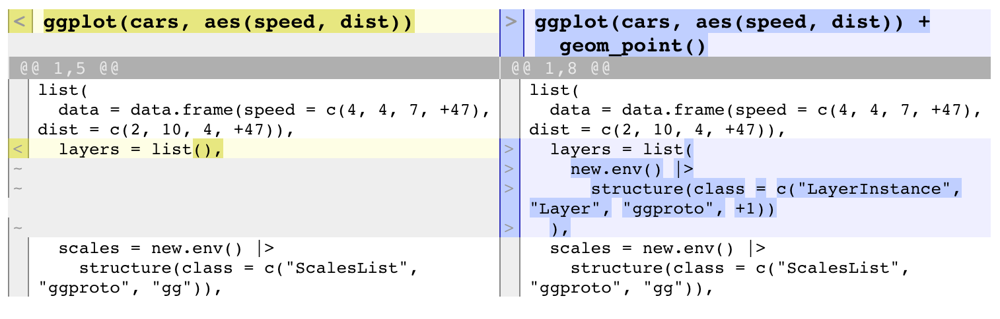

{constructive} prints code that can be used to recreate R objects. In a sense it is similar to base::dput() but {constructive} strives to use “natural” constructors (factor for factors, as.Date() for dates, data.frame() for data frames etc), in order to get output readable by humans.
Some use cases are:
- Snapshot tests
- Exploring objects (alternative to
dput()orstr()) - Creating reproducible examples from existing data
- Comparing two objects (using
construct_diff())
Examples
A few examples compared to their dput() output.
library(constructive)
construct(head(iris, 2))
#> data.frame(
#> Sepal.Length = c(5.1, 4.9),
#> Sepal.Width = c(3.5, 3),
#> Petal.Length = c(1.4, 1.4),
#> Petal.Width = c(0.2, 0.2),
#> Species = factor(c("setosa", "setosa"), levels = c("setosa", "versicolor", "virginica"))
#> )
dput(head(iris, 2))
#> structure(list(Sepal.Length = c(5.1, 4.9), Sepal.Width = c(3.5,
#> 3), Petal.Length = c(1.4, 1.4), Petal.Width = c(0.2, 0.2), Species = structure(c(1L,
#> 1L), levels = c("setosa", "versicolor", "virginica"), class = "factor")), row.names = 1:2, class = "data.frame")
construct(.leap.seconds)
#> as.POSIXct(
#> c(
#> "1972-07-01", "1973-01-01", "1974-01-01", "1975-01-01", "1976-01-01",
#> "1977-01-01", "1978-01-01", "1979-01-01", "1980-01-01", "1981-07-01",
#> "1982-07-01", "1983-07-01", "1985-07-01", "1988-01-01", "1990-01-01",
#> "1991-01-01", "1992-07-01", "1993-07-01", "1994-07-01", "1996-01-01",
#> "1997-07-01", "1999-01-01", "2006-01-01", "2009-01-01", "2012-07-01",
#> "2015-07-01", "2017-01-01"
#> ),
#> tz = "GMT"
#> )
dput(.leap.seconds)
#> structure(c(78796800, 94694400, 126230400, 157766400, 189302400,
#> 220924800, 252460800, 283996800, 315532800, 362793600, 394329600,
#> 425865600, 489024000, 567993600, 631152000, 662688000, 709948800,
#> 741484800, 773020800, 820454400, 867715200, 915148800, 1136073600,
#> 1230768000, 1341100800, 1435708800, 1483228800), class = c("POSIXct",
#> "POSIXt"), tzone = "GMT")
library(dplyr, warn.conflicts = FALSE)
grouped_band_members <- group_by(band_members, band)
dput(grouped_band_members)
#> structure(list(name = c("Mick", "John", "Paul"), band = c("Stones",
#> "Beatles", "Beatles")), class = c("grouped_df", "tbl_df", "tbl",
#> "data.frame"), row.names = c(NA, -3L), groups = structure(list(
#> band = c("Beatles", "Stones"), .rows = structure(list(2:3,
#> 1L), ptype = integer(0), class = c("vctrs_list_of", "vctrs_vctr",
#> "list"))), class = c("tbl_df", "tbl", "data.frame"), row.names = c(NA,
#> -2L), .drop = TRUE))
construct(grouped_band_members)
#> tibble::tibble(name = c("Mick", "John", "Paul"), band = c("Stones", "Beatles", "Beatles")) |>
#> dplyr::group_by(band)We can provide to the dataargument a list, environment, or package where to look for data so we don’t print more than necessary, for instance improving the previous example:
construct(grouped_band_members, data = "dplyr")
#> band_members |>
#> dplyr::group_by(band)We can also trim the output and display only max_atomic elements at most from a vector, or max_list elements from a list. Notice the last element of trimmed objects, prefixed by +, showing how many items were not printed.
construct(dplyr::starwars, max_atomic = 2, max_list = 1)
#> tibble::tibble(
#> name = c("Luke Skywalker", "C-3PO", +85),
#> height = c(172L, 167L, +85),
#> mass = c(77, 75, +85),
#> hair_color = c("blond", NA, +85),
#> skin_color = c("fair", "gold", +85),
#> eye_color = c("blue", "yellow", +85),
#> birth_year = c(19, 112, +85),
#> sex = c("male", "none", +85),
#> gender = c("masculine", "masculine", +85),
#> homeworld = c("Tatooine", "Tatooine", +85),
#> species = c("Human", "Droid", +85),
#> films = list(c("The Empire Strikes Back", "Revenge of the Sith", +3), +86),
#> vehicles = list(c("Snowspeeder", "Imperial Speeder Bike"), +86),
#> starships = list(c("X-wing", "Imperial shuttle"), +86),
#> )If we set those to 0 we build a prototype :
construct(dplyr::starwars, max_atomic = 0, max_list = 0)
#> tibble::tibble(
#> name = character(0),
#> height = integer(0),
#> mass = numeric(0),
#> hair_color = character(0),
#> skin_color = character(0),
#> eye_color = character(0),
#> birth_year = numeric(0),
#> sex = character(0),
#> gender = character(0),
#> homeworld = character(0),
#> species = character(0),
#> films = list(),
#> vehicles = list(),
#> starships = list(),
#> )Some other options :
construct(band_members, tribble = TRUE)
#> tibble::tribble(
#> ~name, ~band,
#> "Mick", "Stones",
#> "John", "Beatles",
#> "Paul", "Beatles",
#> )
construct(as.data.frame(band_members), read.table = TRUE)
#> read.table(header = TRUE, text = "
#> name band
#> Mick Stones
#> John Beatles
#> Paul Beatles
#> ")Limitations
Environments are not always possible to reproduce but we support some common cases. Due to this several objects such as formulas, srcrefs, R6 objects, ggplot objects etc might not be reproducible exactly. If an approximation is enough one might set check = FALSE (don’t fail if object cannot be reproduced), ignore_srcref = TRUE (don’t fail if srcrefs are different), env_as_list = FALSE (don’t attempt to recreate fancy environments, simply use new.env() instead).
construct_diff
construct_diff() highlights the differences in the code used to produce 2 objects.
Let’s try it on ggplot objects, these objects are very complex and {constructive} cannot reproduce them exactly (because environments can’t be reproduced reliably) but we can get close enough to see how adding a geom changes the structure of the object.
library(ggplot2)
construct_diff(
ggplot(cars, aes(speed, dist)),
ggplot(cars, aes(speed, dist)) + geom_point(),
max_atomic = 3,
env_as_list = FALSE, # -> use `new.env()` to produce env objects
)